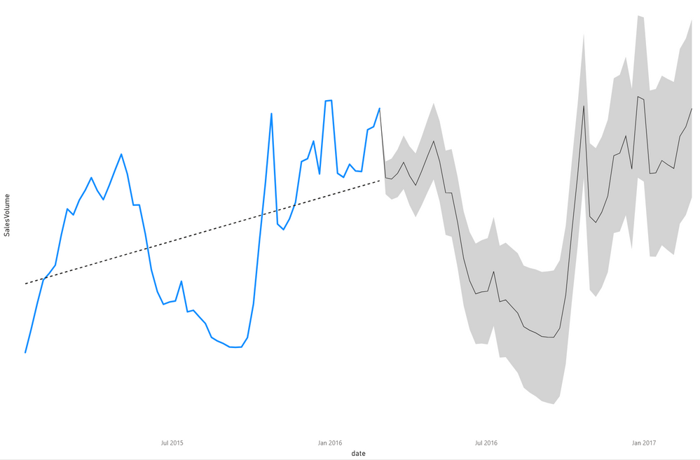
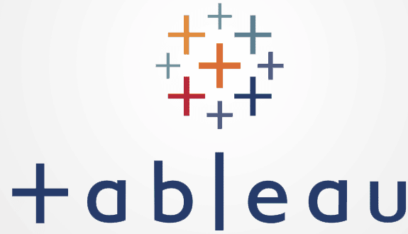

Data Transformation Project
Using Azure Synapse Analytics and Power BI
This project is a case study and it encompasses a couple of scenarios where I proffer solutions as a Power BI Consultant
to a company undergoing a major Data Transformation. I used Azure Synapse Analytics, Advanced Power BI Capabilities plus external tools (DAX Studio)
to address issues such as query performance, data integration, workspace permissions, data security and refresh issues amongst others.


For this project, I provisioned an Azure Synapse Workspace using PowerShell.
From Synapse Studio, I queried the files in the datalake using PySpark.
Then visualized the data using the charts in the Synapse Workspace.

I accessed data in Synapse Dedicated SQL Pool using Power BI desktop
on import mode. I transformed the data using Power Query. Modelled the data in PBI desktop, created measures,
built a report and published it to PBI Service.

For this project, a report was built to respond to business demands. I created tables
in the SQL Server and performed data transformation using SQL. Data was modelled in Power BI. Predictive analysis was
done using the Key Influencers chart and proven using statistical measures (SPSS). Forecasting was done using the Line Chart in Power BI.

In a bid to build a model for an advertisement dataset using Multiple Linear Regression, I ended up with a multicollinear dataset.
I decided to work with the dataset by reducing the multicollinearity. Then I carried out predictive analysis on the dataset and went on to build my model.

I created a couple of Power BI Reports using different datasets

My tableau public profile featuring reports built using different datasets